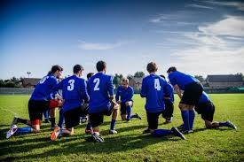
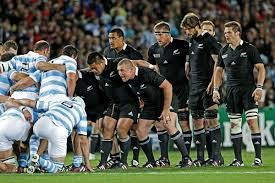

Last updated 30 Jan 2021

Psychological and Social Benefits Of Sports Education
• Develops Self Confidence
Sports teaches one to believe in himself which when coupled with small gestures like a pat on the back, high fives, and praises from the coach, can add to an athlete’s self-esteem and confidence
• Discipline
This is the most important quality that every single successful person tends to have. This is one trait that sports can easily inculcate in a student. Discipline on the playground also becomes the basis of a systematic and organized life, right from waking up on time, to studying, to managing other tasks
• Teamwork
There is no place for ‘I’ in the team. You could argue that there is no ‘We’ either but that’s the beauty of sports, it teaches you how to play to each others’ strengths, amplifying the strengths in the process. The team has to work towards a common goal in unison and unless that happens, the team is deemed to fail. Like at work, in sports too you can’t pick who you want to play with
• 3Ps- Persistence, Patience, and Practise
Persistence, Patience, and Practise are the founding cornerstones for any sport and also life in general. One consistently needs to pursue the goals no matter how many times he fails. You need to pick yourself up and start over. Playing a sport teaches you not to get irritated or annoyed with happenings as sometimes it takes a while for results to show. Practicing diligently fetches you desired outcomes. All of this proves beneficial in all aspects of life, be it academics or career

Physical Benefits Of Sports Education
• Regularity in Exercise
Asking children to exercise can prove futile but if you tell them to go outside and play, they are more than happy to do so. Reason being, children enjoy activities that are fun and engaging. When they are playing a sport they are getting their share of exercise but in an entertaining way
• Healthy Growth
Regular physical workout of the bones and muscles leads to a healthy growth, exempting them from the modern-day lifestyle diseases and illnesses which they usually would have been susceptible to. It also leads to increased cardiovascular fitness as heart, like any another muscle in the body needs regular exercise to stay in its peak. A healthy body breeds a healthy mind and has a positive effect on your performance level in school and at work
• Improves Energy Levels
Playing sports regularly leads to the building of stamina and endurance over time. This leads to a significant increase in energy levels which are quite evident after a period of time. Correct channeling of this energy leads to increased productivity on and off the ground.
In our opinion, athletes should be as celebrated as much as scholars are. The child excelling in academics and the child exhibiting distinction in sports should be given equal importance. If the vision is adopted and executed well, there will definitely be a day when both the awards are bagged by the same student. Let us open our mind to the era of endless possibilities!